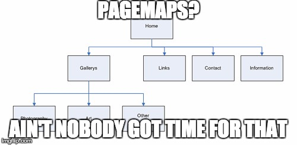
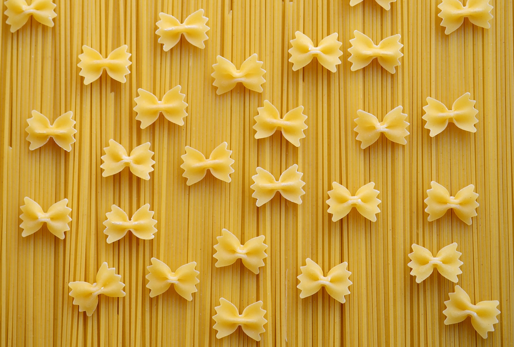

Epic Stuff
Welcome back, my dudes everybody! Today Now, we will be showing you guys some of the most epic things we can think of. When we show you this stuff, you need to be amazingly amazed. Otherwise, you will not understand how epic it is. If you are having trouble being amazed, play the video below.
The Pagemap
Click on a link to be brought to the part about that thing.
Piano

The piano is a very grate instument. In fact, all of us here at NicoliNet play the piano. All of the grate composers, like Mozart, Bach, and Rick Astley (probably) played the piano. It can play all the notes you'll ever want to play, and it is epic. It also sounds cool in addition to not being a string instrument (it's percussion).
Cheese and Pasta (Or Perhaps Pasta and cheese)
The font you see in the title is called "Luckiest Guy". Do you know why? That's right. If you're eating pasta (or cheese), you're a very lucky guy. In fact, here at NicoliNet we all believe that pasta and cheese are tied for the second best food, only to be beaten by a tie of pasta with cheese and Filet Mignon. Understand? Good!
This Epic Vid

Too epic to explain in words.
French Horn
The French Horn sounds very epic, as you can see. When one plays the French Horn, they are allowing all the people around them to hear pure majesticness. The only reason that everbody does not play the French Horn is that some people (read: most people) just cannot handle the amazingness. The French Horn is also very hard because that is a fact. That is why the French Horn is so amazing.